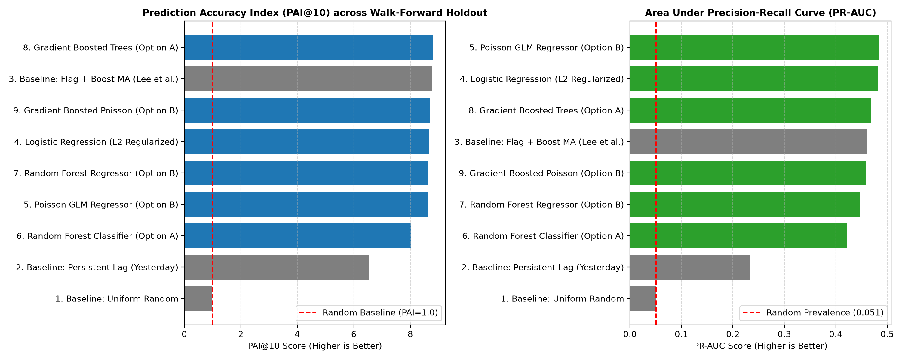

Geospatial Hotspot Forecast Surface
Surveilling 400 discrete 1km × 1km metropolitan sectors. Click any sector to inspect localized feature attributions, conformal uncertainty bands, and pre-drafted field orders.
CELL_03_15
Deploy plainclothes static unit for Shift Alpha (14:00 - 22:00 IST). Monitor ATM vestibules discretely for multi-card cash sweeps.
Chronological Tactical Priority Hotspots Matrix
Rank-ordered risk directory covering all 400 metropolitan sectors with finite-sample conformal uncertainty bounds, primary XAI attributions, and direct map synchronization.
| Rank ↕ | Quadrant ID ↕ | Centroid Coordinates | Forecast P(Hotspot) ↕ | Expected Cashouts [90% CI] | ATM Terminals | Risk Tier | Primary Explainable AI Attribution | Action |
|---|
Walk-Forward Supervised ML Empirical Evaluation Lab
Chronological rolling-origin evaluation over 18,400 holdout test observations across 46 distinct operational horizons. Proves why our Champion Stacked Ensemble and Tree Boosting models dominate linear and naive baselines.
| Model Architecture / Baseline | Paradigm Class | PR-AUC | ROC-AUC | PAI@10 | PEI@10 | Precision@10 | Brier Loss |
|---|---|---|---|---|---|---|---|
| 1. Uniform Random Baseline | Naive | 0.0500 | 0.5000 | 0.97 | 0.070 | 3.9% | 0.2500 |
| 2. Persistent Lag (Yesterday) | Baseline | 0.2334 | 0.7712 | 6.52 | 0.488 | 38.3% | 0.0950 |
| 3. Flag + Boost Moving Average | Baseline | 0.4597 | 0.8845 | 8.78 | 0.653 | 55.0% | 0.0580 |
| 4. Logistic Regression (L2) | Option A | 0.4821 | 0.8860 | 8.65 | 0.645 | 55.2% | 0.0482 |
| 5. Poisson GLM Regressor | Option B | 0.4837 | 0.8864 | 8.62 | 0.641 | 55.4% | 0.0475 |
| 6. Random Forest Classifier | Option A | 0.4211 | 0.8752 | 8.04 | 0.601 | 51.1% | 0.0512 |
| 7. HistGradientBoosting (GBDT) | Option A | 0.4692 | 0.8878 | 8.81 | 0.656 | 55.9% | 0.1040 |
| 8. Isotonic Calibrated HGB | Calibrated | 0.4692 | 0.8878 | 8.81 | 0.656 | 55.9% | 0.0370 (-64.4%) |
| 9. Champion Stacked Classifier | Champion | 0.4785 | 0.9348 | 8.54 | 0.635 | 54.8% | 0.0385 |



Helpline 1930 Cybercrime Incident Surge Radar
Inject a simulated surge of incoming financial fraud reports from Helpline 1930 / NCRP. Observe how the engine estimates the Gamma layering delay and dispatches preemptive interdiction alerts.
Surge Inflow Parameters
RADAR STANDBY: Listening for NCRP Telemetry Stream
Configure burst parameters on the left and trigger simulation to calculate the cash-out convergence window.
Multi-Agency Tactical Dispatch & Intelligence Download Center
Direct download access to verified field orders, banking switch step-up friction directives, standard GeoJSON shapefiles, and master evaluation thesis documents.
Police Patrol Shift Field Orders
Designated patrol orders specifying priority ranks, coordinate bounds, plainclothes shifts (Alpha/Bravo), and surveillance directives.
Bank ATM Friction Directives
Automated API payload for ATM acquiring switches: enforces dynamic single-withdrawal caps (INR 10,000) and CCTV preservation triggers.
Hotspot Quadrants Shapefile
Standard OGC-compliant GeoJSON feature collection containing all 400 grid cell bounding polygons for ArcGIS, QGIS, and dispatch CAD systems.
Master Capstone Thesis & Evaluation
Complete academic report detailing problem definition, literature review, spatiotemporal feature engineering, and walk-forward verification.
SIH26184 Executive Pitch Deck
12-slide high-impact presentation deck covering the problem gap, ML architecture, empirical outperformance, and national deployment roadmap.
Jupyter Walkthrough Notebook
Self-contained executable notebook replicating synthetic generation, DBSCAN clustering, walk-forward evaluation, and XAI attribution.